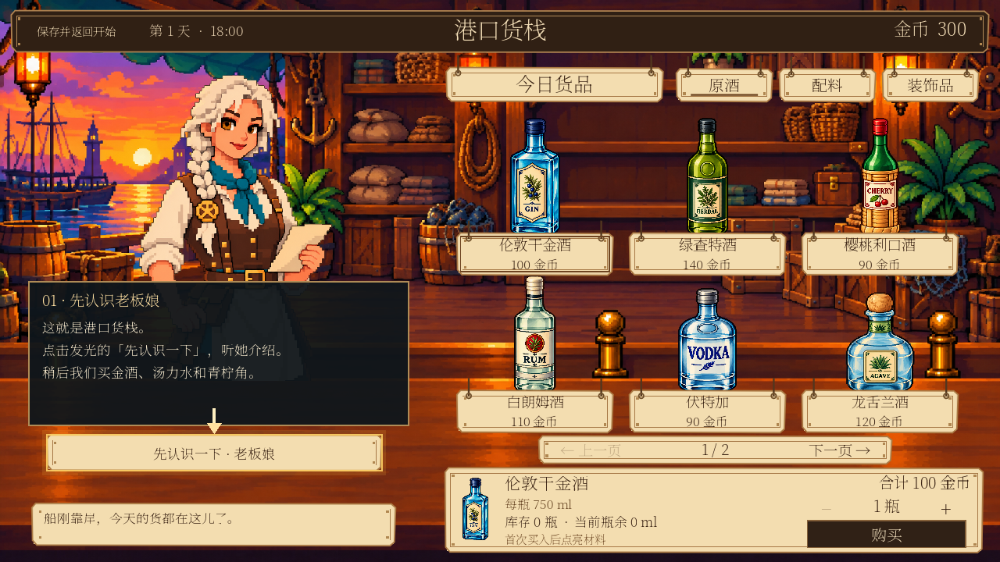
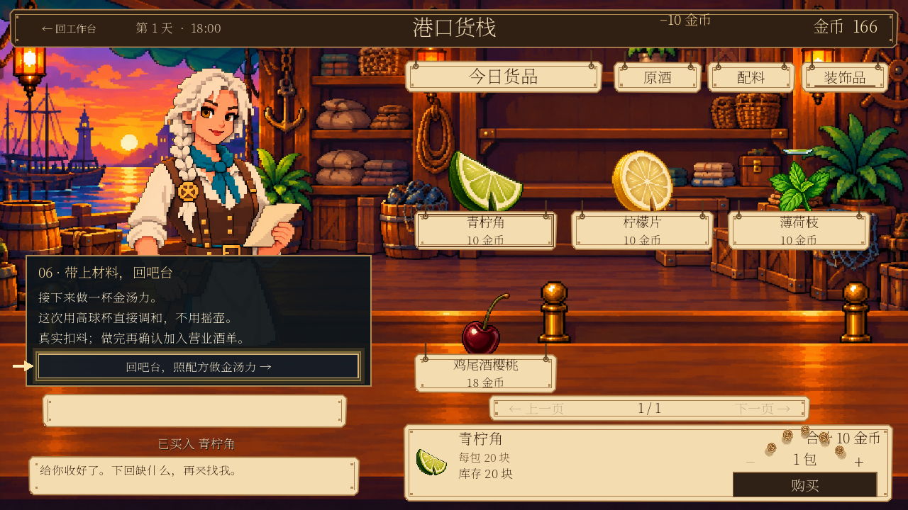
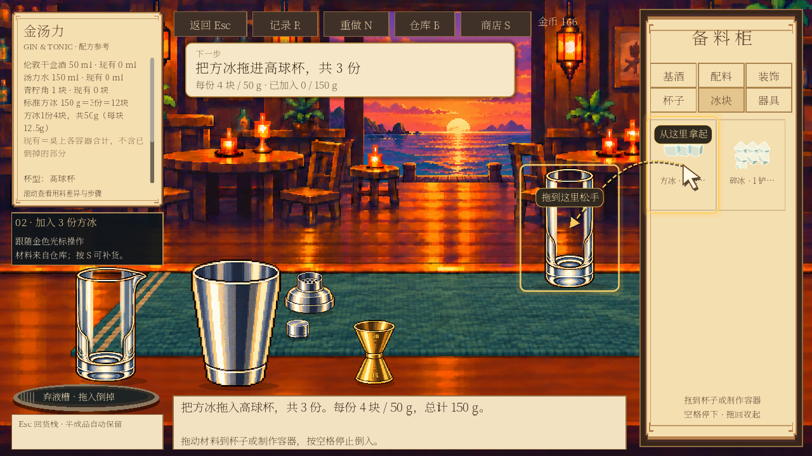
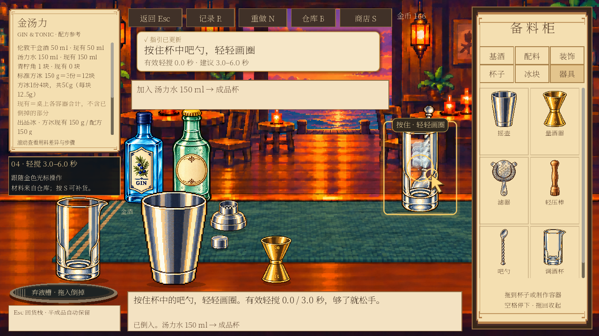
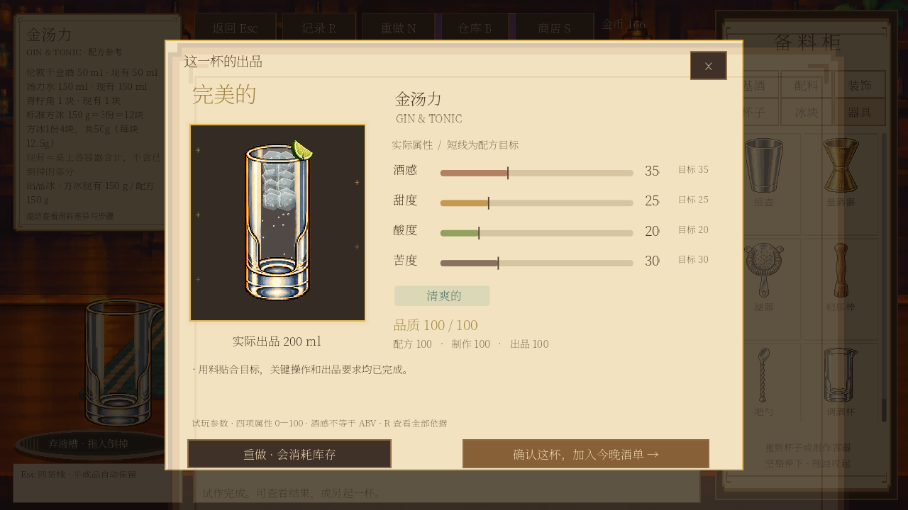
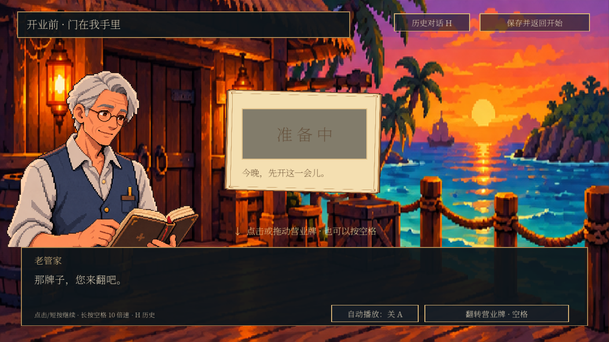
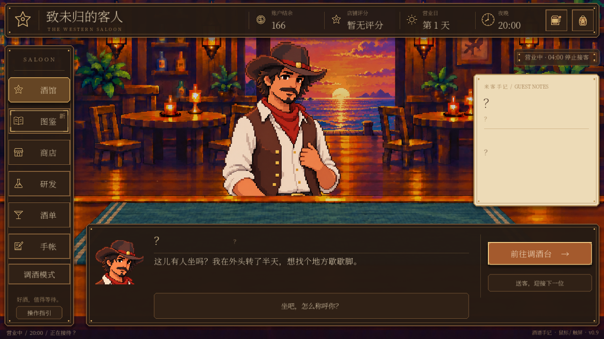

采购 → 金汤力 → 开业迎客
以下是 Godot 实机截图，使用独立测试存档。正式游玩中的高亮、箭头和操作光标会动态提示；本页为静态截图。
直接进入港口货栈
正式商店与老板娘，动态箭头指向需要点击的位置。

买齐材料，再回吧台
根据真实库存补齐练习一杯和营业一杯所需的材料；首次示例花费 134 金币。

继续做一杯金汤力
正式工作台、高球杯，按步骤引导加冰、量取、直倒、轻搅与装饰。

教学和品质评分共用时间标准
当前金汤力建议有效轻搅 3–6 秒；达到范围后提示松手。

查看这一杯的真实品质
材料真实消耗，查看结果后确认加入营业酒单。

翻开营业牌
保留结尾独白，稍作停留后自动继续。

自动快进，第一位客人来了
直接进入 20:00 营业场景，接待米洛，不回开始界面。
